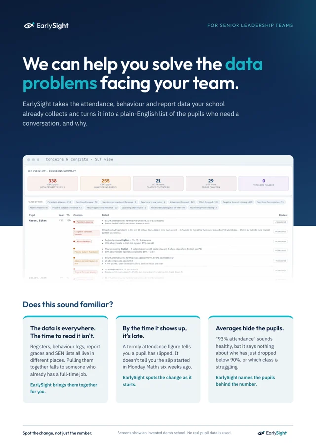

Missed lessons, not just missed days
Statutory attendance counts sessions. A pupil can be marked present all day and still miss every Thursday Maths lesson. EarlySight reads lesson registers and picks out subject avoidance.
Most reports rank pupils by where they are. EarlySight watches which way they are moving. It reads the attendance, behaviour and grades already in your MIS and flags the pupils whose performance is changing, months before it shows in their results.
Why it matters
Your MIS already holds accurate attendance, behaviour and assessment data. What staff don't have is the time to go through it pupil by pupil, every week, looking for the ones who are starting to slip.
EarlySight does that reading for you. It analyses attendance, behaviour and grades together, compares each pupil with their own record, and gives every member of staff a short list of the pupils who need a look, with the reason why.
No extra data entry. It works from the data your school already collects.
What it spots
Statutory attendance counts sessions. A pupil can be marked present all day and still miss every Thursday Maths lesson. EarlySight reads lesson registers and picks out subject avoidance.
Every pupil is compared with their own record. Three sanctions in a fortnight means little for some pupils and a great deal for a pupil who has never had one. EarlySight knows the difference.
Subjects grade differently and terms aren't always comparable. EarlySight measures each pupil's position within the subject, and when two data collections can't be compared, it says so instead of drawing a misleading chart.
Every flag comes with its reason. Staff see the evidence in plain numbers, and mark each concern as considered once they've looked into it.
For your staff
Patterns, not just numbers
EarlySight maps which pupils are sanctioned in the same lessons, class by class. It shows at a glance where a seating plan or a timetable change might help more than another detention.
What the data showed
From our pilot with a UK secondary school. Every school is different, which is why EarlySight looks at yours.
Almost every pupil who became persistently absent was already below 95% attendance the year before.
Autumn grades averaged 0.72 higher than spring's. Compared naively, almost every pupil appeared to decline.
Pupils above 97% attendance sat around the 57th percentile for attainment. Pupils below 90% sat around the 15th.
The most generous subject averaged more than a full grade above the least generous, which changes who looks like they are struggling.
Built around your existing MIS data. Nothing new for staff to record.
Tutors, year leaders and senior leaders each see only the pupils in their remit.
View our certificate. Pupil data is handled under a data processing agreement with each school.
Free brochure
A four-page guide to the data problems facing your team, and how EarlySight helps solve them.

Thank you. Your brochure is ready.
Download the brochure (PDF)If you'd like to see EarlySight running, book a demo.
We'll show you EarlySight running on a demo school, and talk through what it would look like with your own data.
Request a demo
andy@earlysight.co.uk
Email to book a demo Tell us your school and your role, and we'll arrange a time.